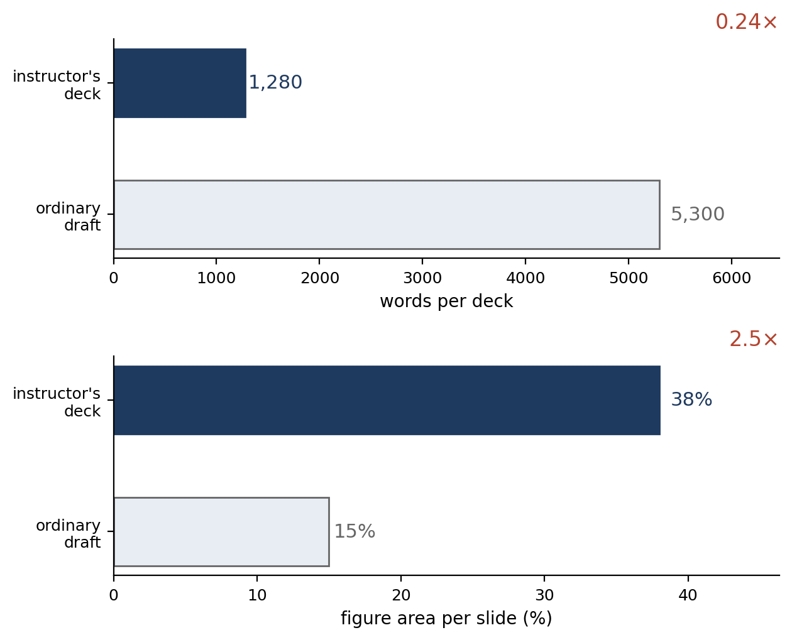
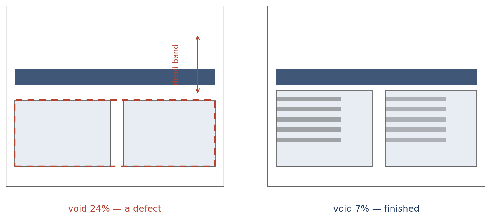
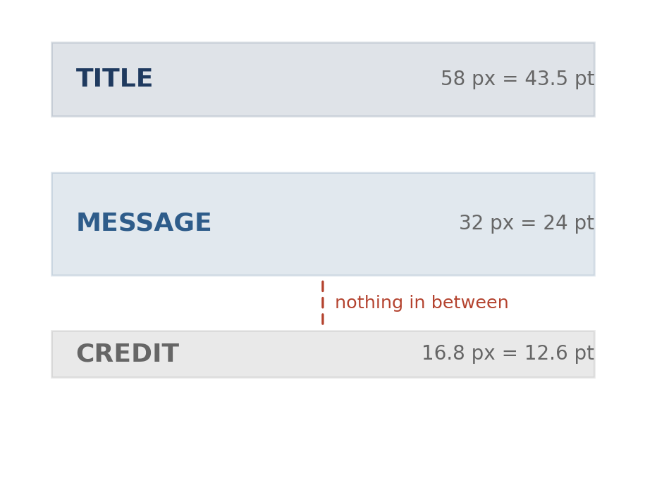

Teaching skills · worked example
Worked example · no course attached
Background: generated plate by make_figures.py, not data

[course] Own figure; numbers from
references/density-target.md §1

[course] Own figure; void share from
scripts/audit_deck.py
Shrink the type and you have written a document, not a slide.
24 pt message · 12.6 pt credit · nothing betweenThree roles. No fourth.
Six checks, in order, each able to fail.
Plate generated by make_figures.py — no data
| Stage | Question | Cost of skipping |
|---|---|---|
| 1 | Does the markup close? | silent dead edits |
| 2 | Do the assets resolve? | a blue box on stage |
| 3 | Does the render overflow? | type past the frame |
| 4 | Has anyone looked at it? | the deck is a claim |
Every stage above 3 is a script. Stage 4 is not.

[course] Own figure; sizes from
templates/deck.html <style>